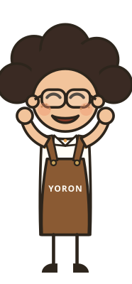
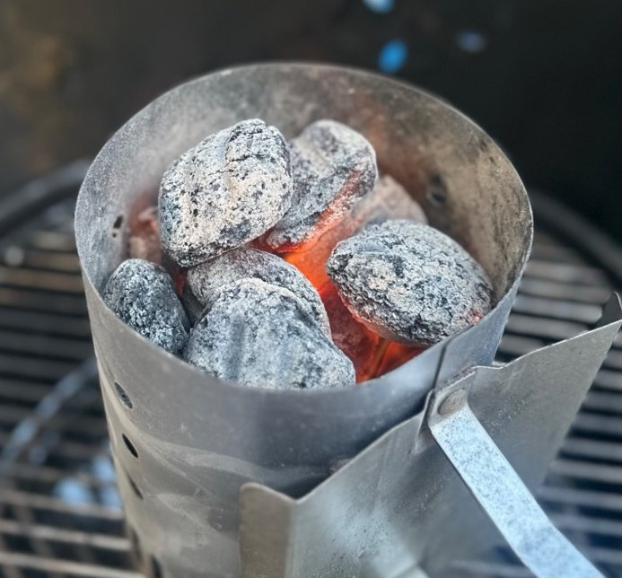
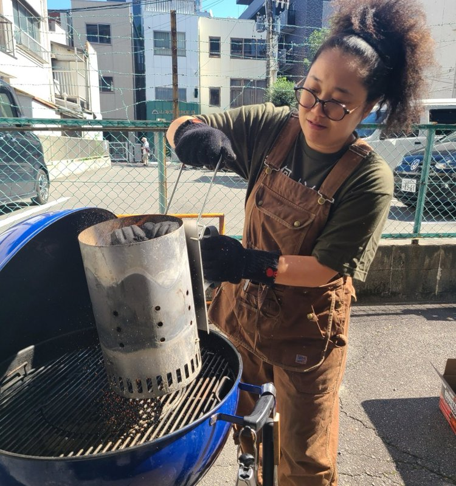
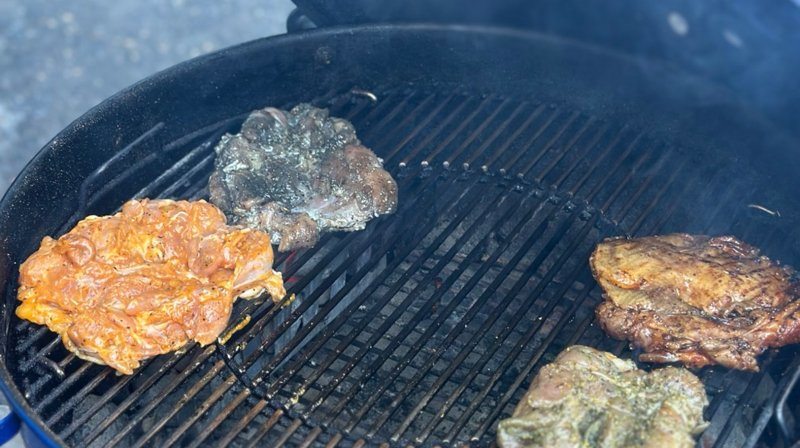
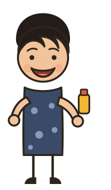

火を起こし、火をあやつる。名古屋で初めての講座
10/11、名古屋・大須で、あんちゃんが教える「Grillist Basic Course（初級編）」を初めて開きました。道具は持っているのに使いこなせない人、基礎からやり直したい人が集まり、4組のペアで、炭の火起こしから2つのゾーンの使い分け、スパイス選び、7品の焼き分けまでを全部自分の手でやりました。最後は修了証を受け取って、集合写真で解散です。

1火はあおがない。ほったらかしで起こす
最初の大仕事は火起こし。うちわでパタパタあおぐ、いつもの火起こしとはまったく違うやり方でした。
ペアごとにグリルを1台。大きなケトル2台と、持ち運べる小さなグリル2台を使い分けました。最初の火起こしは、うちわでパタパタあおぐいつものやり方とはまったく違って、火をつけたら待つだけ。その間に中で野菜を切り、戻ってくるころには炭がすっかり準備できていました。
ここから先の料理は、ぜんぶ「炭のある側」と「ない側」の2つのゾーンの使い分け。これを覚えると、表面だけ焦げて中が生、という焼き方とはお別れです。
焼くたびに網をみがく「ゴシゴシタイム」は、この日いちばん口にした言葉かもしれません。


2スパイス選びから、自分だけのチキンを焼く
チキンの味付けは、ずらりと並んだスパイスのテイスティングから。オーストラリア、ニュージーランド、アメリカ、日本と、国ごとに味の方向がまるで違いました。
ひとさじずつ舐めては、辛い、チョコみたい、炭の香りがする、と言い合いながら、自分の1枚に使うスパイスを決めていきます。ブレンドする人、ひとつに絞る人、それぞれでした。
焼き上がったら、ペア同士で食べ比べ。皮はカリッと、中はプリプリで、フライパンとは別物だという声が続きました。同じ鶏ももでも、スパイスが違うだけで全部違う味になるのが、この講座のいちばん面白いところです。

3焼き野菜とポテトに、いちばん素直な「うまい」
チキンの下ごしらえのあとは、野菜を切ってグリルへ。焼き上がりを待つ間に、みんなでつまみました。
パプリカ、玉ねぎ、ズッキーニを、野菜用のバスケットでまとめて焼きました。焦げて炭になるいつもの焼き野菜とは違って、しんなりしてみずみずしいまま。パプリカが甘い、ズッキーニがおいしいと、塩だけの下味でも箸が止まりません。あんちゃんいわく、BBQのあとに「いちばんおいしかったのは野菜」と驚かれることが多いそうです。
じゃがいもとさつまいもは、皮つきのままじっくり焼いてホクホクに。さつまいもは何も味をつけていないのに甘くて、驚く声が上がりました。
4燻したソーセージと、板で蒸し焼くサーモン
火が少し落ち着いてきたら、燻製と板焼き。煙と木の香りをつける2品です。
ソーセージは、燻製の香りがのるように生のものを使います。りんごの木とチェリーの木で燻した2台を食べ比べると、色も香りも少しずつ違う。パンパンに張った皮をかじると、肉汁が勢いよく飛び出しました。一緒に燻した卵も、卵だと分からなくなるくらいの香りです。
サーモンは、杉の板と桜の板にのせて焼く一皿。木の香りをまとって、ふっくら仕上がりました。2枚の板で香りの違いを食べ比べられるのも、この料理の楽しいところです。
5市販のピザが化けて、焼きオレンジで締める
最後はピザとデザート。そして、受講したみなさんへの修了証です。
ピザは、スーパーで売っている生地に、ペアごとに好きな具をのせて焼きました。底はパリッと、中はもちっと。数百円のピザが化けた、と焼き上がるたびに歓声が上がりました。チーズとはちみつだけのピザも、別腹で消えていきました。
締めは焼きオレンジ。熱でぷっくり膨らんだ果肉は、お腹いっぱいでもするっと入ります。最後にあんちゃんから一人ずつ修了証が手渡されて、全員で集合写真を撮りました。

参加者の声
どれも本当に美味しく、それぞれのスパイスの味付けによってそれぞれの個性が出るのもまた面白くて発見がありました。サーモン、オレンジは本当に素材の味が生かされていてまたそれも最高に美味しかったです。幸せー
普段食べる食材が別物みたいでした！使うスパイスによって良さがどれも違ってお腹いっぱいになるまで食べれました。鶏肉とサーモンはふわふわで、ピザは生地がサクモチでお気に入りでした。お腹いっぱいでもサラッと食べれるオレンジも最高でした！ありがとうございました！